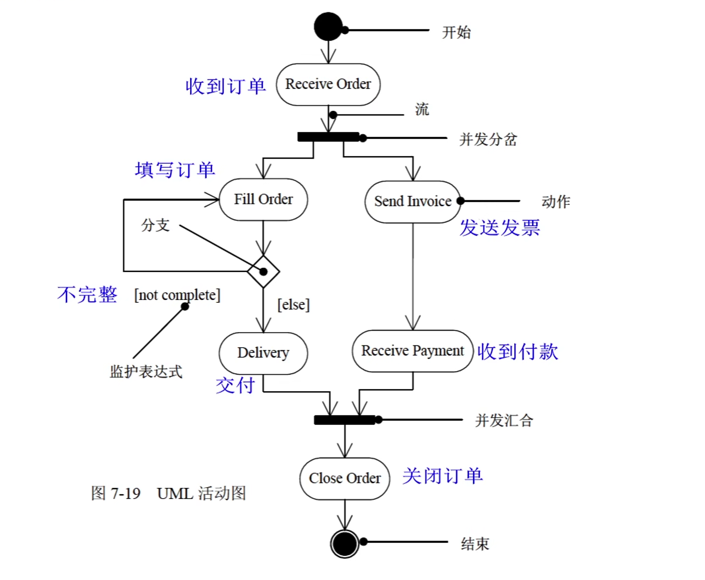

中级–软件设计师（知识点）
知识产权
著作权（版权）
- 人身权
- 发表权（期限：终身+50年）、署名权、修改权、保护作品完整权
- 财产权
专利地域性
各国主管机关依照本国法律授予的知识产权，只能在其本国领域内受法律保护（哪里申请，哪里保护）
计算机软件著作权
主体与客体
- 主体
- 计算机软件著作权的主体指享有著作权的人
- 根据规定：著作权法（《中华人民共和国著作权法》）、《计算机软件保护条例》
- 客体
- 计算机软件著作权的主体指著作权法保护的计算机著作权的范围（受保护的对象）
- 计算机程序：源程序和目标程序
- 计算机软件的文档：程序设计说明书、流程图和用户手册
- 根据规定：《著作权法》第三条、《计算机软件保护条例》第二条
- 计算机软件著作权的主体指著作权法保护的计算机著作权的范围（受保护的对象）
权利
- 人身权
- 发表权、开发者身份权（署名权）
- 财产权
保护期
计算机软件著作权的权利自软件开发完成之日起产生，保护期为50年。保护期满，除开发者身份权外，其他权利终止。
职务作品
职务软件作品指公民在单位任职期间为执行本单位工作任务所开发的计算机软件作品。（开发人员仅享有署名权）
若开发的软件不是执行本职工作的结果，其著作权不属单位享有。如果该雇员主要使用了单位的设备，著作权不能属于该雇员个人享有。
委托开发
接受他人委托开发的软件，其著作权的归属由委托者与受委托者签订书面合同约定；无书面合同或者书面合同未作明确约定的，其著作权由受托人享有。
商业秘密权
商业秘密：指不为公众所知悉的，能为权利人带来经济利益、具有实用性并经权利人采取保密措施的技术信息和经营信息。
专利权申请
- 专利申请原则
- 两个或者两个以上的人分别就同样的发明创造申请专利的，专利权授给最先申请人，同一时间则协商。
商标权
-
时间性
- 我国商标权的保护期限自核准注册之日起10年内有效，但可以根据其所有人的需要无限地延长权利期限，在期限届满前6个月内申请续展注册，每次续展注册的有效期为10年
-
商标注册
- 先注册先得，同一时间，先使用先得，未使用协商。
面向对象技术
类
一个类所包含的方法和数据描述一组对象的共同行为和属性。
类是在对象之上的抽像，对象是类的具体化，是类的实例。
- 类分为三种
- 实体类
- 其对象表示现实世界中真实的实体
- 接口类（边界类）
- 其为用户提供一种与系统合作交互的方式
- 控制类
- 其用来控制活动流，充当协调者
- 实体类
- 一般类与特殊类
- 一般类为特殊类的父类，特殊类为一般类的子类
对象
对象是基本的运行时的实体，它既包括数据（属性 | 状态），也包括作用与数据的操作（行为 | 方法 | 函数）。
一个对象通常由对象名、属性和方法 3 个部分组成。
消息
对象之间进行通信的一种构造叫作消息。
当一个消息发送给某个对象时，包含要求接收对象去执行某些活动的信息。接收到信息的对象经过解释，然后予以响应。这种通信机制称为消息传递。
方法重载
- 方法名相同，参数个数不同
- 方法名相同，参数类型不同
- 方法名相同，参数类型顺序不同
封装
封装是一种信息隐蔽技术，它的目的是使对象的使用者和生产者分离，使对象的定义和实现分开。
继承
继承是父类和子类之间共享数据和方法的机制。
一个父类可以有多个子类，这些子类都是父类的特例，父类描述类这些子类的公共属性和方法。一个子类可以继承它的父类（或祖先类）中的属性和方法，这些属性和操作在子类中不必定义，子类还可以定义自己的属性和方法。
单重继承：继承一个父类
多重继承：继承两个及以上的父类
多态
同类的不同的对象收到同一消息可以产生完全不同的结果，这一现象称为多态。
父类 对象名 = new 子类 编译看左边，运行看右边
多态的不同形式
- 多态
- 通用的
- 参数：泛型
- 包含：父类引用子类
- 特定的
- 过载：重载方法
- 强制：强制类型转换
- 通用的
静态、动态绑定
绑定是一个把过程调用和响应调用所需要执行的代码加以结合的过程
- 静态绑定：在编译时进行
- 动态绑定：在运行时进行
面向对象设计原则
- 单一责任原则
- 就一个类而言，应该仅有一个引起它变化的原因
- 开放-封闭原则
- 对扩展开放，对修改封闭
- 里氏替换原则
- 基类出现的地方，子类必定能出现
- 依赖倒置原则
- 依赖于抽象，而不依赖于细节（实现）
- 接口分离原则
- 依赖于抽象，而不依赖与具体
- 共同重用原则
- 重用包中的一个类，就要重用包中的所有类
- 共同封闭原则
- 一个变化若对一个包产生影响，则将对该包中的所有类产生影响，而对于其他的包不造成影响
面向对象
分析（OOA）
面向对象分析的目的是为了获得对应用问题的理解。理解的目的是确定系统的功能、性能的要求。
5 个活动
- 认定对象
- 定义问题域，将自然存在的 ‘名词’ 作为一个对象
- 组织对象
- 对象间的相互作用
- 基于对象的操作
- 定义对象的内部信息
设计（OOD）
面向对象设计是将 OOA 所创建的分析模型转化为设计模型，其目标是定义系统构造蓝图。
OOD 在复用 OOA 模型的基础上，包含与 OOA 对应如下五个活动：
- 识别类及对象
- 定义属性
- 定义服务
- 识别关系
- 识别包
测试
4 个层次
- 算法层
- 类层
- 模板层
- 系统层
补充
- 类的静态方法只能访问该类的静态数据成员
- 静态数据成员可以被该类的所有方法访问
- 该类的对象共享其静态数据成员的值
- 在面向对象技术中，对象具有清晰的边界、良好定义的行为、可扩展性的特性
UML
UML 统一建模语言，由 3 个要素构成，UML 的基本构造块、支配这些构造块如何放置在一起的规则、运用与整个语言的一些公共机制。
UML 的词汇表包含 3 种构造块：
- 事物
- 对模型中最具有代表性的成分的抽象
- 关系
- 把事物结合在一起
- 图
- 聚集了相关的事物
事物
4 种事物：
- 结构事物（静态部分）
- 类、接口、协作、用例、主动类、构件、制品、结点
- 行为事物（动态部分）
- 交互、状态机、活动
- 分组事物（组织部分）
- 包
- 注释事物（解释部分）
- 注解
关系
4 种关系：依赖、关联、泛化、实现
依赖关系
依赖是两个事物之间的语义关系，其中一个事物（独立事物）发生变化会影响另一个事物（依赖事物）的语义。
关联关系
关联是一种结构关系，它描述了一组链，链是对象之间的连接。聚集是一种特殊类型的关联，它描述了整体和部分间的结构关系。
在关联上可以标注重复度（多重度）和角色。
-
聚集：部分和整体的生命周期不一致，整体消失了，部分仍然存在，部分可以脱离整体存在。
-
-
组合：部分和整体的生命周期一致，整体消失了，部分也消失了，部分不可以脱离整体存在。
-


关联多重度
多重度是指一个类的实例能够与另一个类的多少个实例相关联
泛化关系
泛化是一种特殊/一般关系，特殊元素（子类）的对象可替代一般元素（父类）的对象。

实现关系
实现是类元之间的语义关系，其中一个类元指定了由另一个类元保证执行的契约。

图
静态建模：类图、对象图、用例图
动态建模：序列图、通信图、状态图、活动图
物理建模：构件图、部署图
交互图：序列图、通信图
类图
类图展现了一组对象、接口、协作和它们之间的关系。 类图一般包括类、接口、协作、依赖、泛化、关联。

3 种方式使用类图
- 对系统的词汇建模
- 对简单的协作建模
- 对逻辑数据库模式建模
对象图
对象图展示了某一时刻一组对象以及它们之间的关系。对象图一般包括对象、链。

用例图
用例图展现了一组用例、参与者以及它们之间的关系。用例图一般包括用例、参与者、用例之间的扩展关系（«extend>>）和包含关系（«include>>）、参与者和用例之间的关联关系、用例与用例以及参与者与参与者之间的泛化关系。
参与者：表示人、硬件或其他系统可以扮演的角色
用例：一个类，代表一类功能而不是使用该功能的某一具体实例

- 包含关系（用例&用例）
- 当某一用例被执行时，其箭头指向的用例（被包含用例）也会被执行。
- 扩展关系（用例&用例）
- 一个用例执行的时候，可能会发生一些特殊的情况或可选的情况，这种情况就是这个用例的扩展用例。
- 泛化关系（用例&用例 || 参与者&参与者）
序列图（顺序图）
序列图是场景的图形化表示，描述了以时间顺序组织的对象之间的交互活动。
- 序列图有两个不同于通信图的特征：
- 序列图有对象生命线，表示一个对象在一段时间内存在
- 序列图有控制焦点（生命线上的矩形），表示一个对象执行一个动作所经历的时间段

通信图（协作图）
通信图强调收发消息的对象的结构组织，展示对象之间的消息流及其顺序。
- 通信图有两个不同于序列图的特性
- 通信图有路径
- 通信图有顺序号

序列图和通信图是同构的，它们之间可以相互转换。
状态图
状态图展现了一个状态机，它由状态、转换、事件、活动组成，强调对象（单个）行为的事件顺序，通常对反应型对象建模。
状态图用于描述一个对象在多个用例中的行为，用于某些具有多个状态的对象而不是系统中大多数或全部对象。
- 状态
- 活动
- 活动表的语法格式：
事件名（参数表）/动作表达式
- 活动表的语法格式：
- 事件
- 事件表达式语法格式：
事件说明[监护条件]/动作表达式
- 事件表达式语法格式：
- 转换（迁移）
- 转换可以包含事件触发器、监护条件、状态（两个）
状态图可以没有终止状态。
转换包括两个状态（源状态，目标状态）。
事件触发转移（迁移）。
活动（动作）可以在状态内执行，也可以在状态转换（迁移）时执行。

组合状态也称超状态，嵌套状态也称子状态
活动图
活动图是一种特殊的状态图，它展现了在系统内从一个活动到另一个活动的流程。
构件图
构件图展现了一组构件之间的组织和依赖。通常把构件映射为一个或多个类、接口或协作。

部署图
部署图是用来对面向对象系统的物理方面建模的方法，展现了系统的软件和硬件之间的关系，在实施阶段使用。